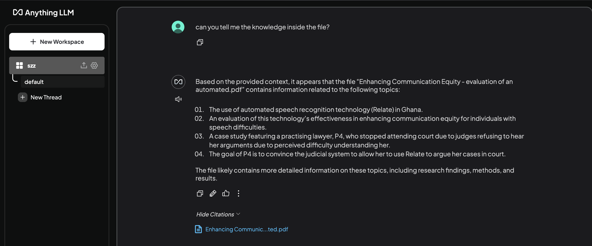
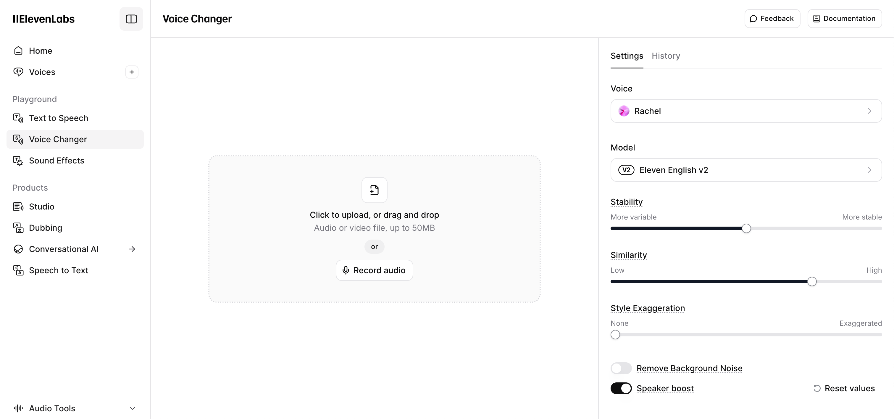

Phase1
Related project review
Before starting to build our own project, we conducted research on existing RAG AI solutions. One well-known approach is using the Ollama + AnythingLLM client. In this setup, users need to use Ollama to download and manage LLMs and then utilize AnythingLLM to call the model and connect to a database. Afterward, users can ask questions through AnythingLLM.
However, this approach has several drawbacks:
Complex operation – Users need to install multiple third-party clients, configure them manually, and establish connections between them to achieve RAG functionality.
Limited flexibility – Users can only use models supported by the Ollama client and cannot freely adjust models or experiment with new open-source models.
Our Project Goal
To address these limitations, our goal is to enable users to utilize RAG AI functionality without relying on any third-party software. Additionally, we want users to have the freedom to choose and use any LLM they prefer, without being restricted by third-party platforms.
Figure 1: Ollama + AnythingLLM client
Large Language Model (LLM) Comparison
Aiming for 16GB of user memory, we tested the requirements and performance of major open-source large language models to determine which model was best suited for RAG project.
Generation Speed Comparison
| Model | Size | Memory Used (GB) | Generate Time (s) |
|---|---|---|---|
| llama3.2-3b | 3B | 10.94 | 11.74 |
| qwen3.2-3b | 3B | 9.55 | 9.69 |
| llama3.2-1b | 1B | 5.93 | 7.21 |
| qwen3.2-1.5b | 1B | 7.47 | 6.35 |
Generation Response Evaluation
In our tests, we used the article “Enhancing Communication Equity: Evaluation of an Automated Speech Recognition Application in Ghana” to test LLM's RAG capability, link to article:
Enhancing Communication Equity: Evaluation of an Automated Speech Recognition Application in GhanaEvaluation Criteria
| Criteria | Excellent (4-5) | Good (2-3) | Poor (0-1) |
|---|---|---|---|
| Understanding of Concept | Thoroughly explains key concepts with relevant study examples. | Partially explains key concepts but lacks depth or examples. | Fails to explain concepts or provides incorrect information. |
| Use of Supporting Evidence | Provides strong evidence from the study, including participant insights. | Uses some evidence, but lacks depth or specificity. | No or weak evidence from the study. |
| Critical Analysis | Offers deep analysis of issues, potential solutions, and their impact. | Provides a basic analysis but lacks depth. | Superficial or no analysis. |
| Clarity & Organization | Well-structured, clear, and logically presented answer. | Partially structured with minor clarity issues. | Disorganized, difficult to follow, or incomplete. |
| Innovative Thinking | Offers unique insights or practical recommendations. | Some insights but lacks originality. | No insights or original thought. |
Qwen 2.5 3B
| Category | Contextual Factors | Model Adaptation and Flexibility | Human-Technology Interaction | Broader Policy and Ethical Considerations |
|---|---|---|---|---|
| Understanding of Concept | 5 | 4 | 5 | 5 |
| Use of Supporting Evidence | 5 | 4 | 5 | 4 |
| Critical Analysis | 4 | 4 | 5 | 4 |
| Clarity & Organization | 5 | 4 | 5 | 5 |
| Innovative Thinking | 4 | 3 | 4 | 5 |
Total Score: 89
Llama 3.2 3B
| Category | Contextual Factors | Model Adaptation and Flexibility | Human-Technology Interaction | Broader Policy and Ethical Considerations |
|---|---|---|---|---|
| Understanding of Concept | 4 | 3 | 4 | 5 |
| Use of Supporting Evidence | 4 | 3 | 4 | 4 |
| Critical Analysis | 4 | 3 | 4 | 4 |
| Clarity & Organization | 5 | 4 | 5 | 5 |
| Innovative Thinking | 3 | 3 | 3 | 4 |
Total Score: 78
Qwen 1.5B
| Category | Contextual Factors | Model Adaptation and Flexibility | Human-Technology Interaction | Broader Policy and Ethical Considerations |
|---|---|---|---|---|
| Understanding of Concept | 4 | 3 | 4 | 5 |
| Use of Supporting Evidence | 3 | 3 | 3 | 4 |
| Critical Analysis | 3 | 3 | 3 | 4 |
| Clarity & Organization | 4 | 3 | 4 | 4 |
| Innovative Thinking | 3 | 2 | 3 | 4 |
Total Score: 69
Llama 1B
| Category | Contextual Factors | Model Adaptation and Flexibility | Human-Technology Interaction | Broader Policy and Ethical Considerations |
|---|---|---|---|---|
| Understanding of Concept | 3 | 3 | 3 | 4 |
| Use of Supporting Evidence | 2 | 2 | 3 | 3 |
| Critical Analysis | 3 | 3 | 3 | 3 |
| Clarity & Organization | 3 | 3 | 4 | 4 |
| Innovative Thinking | 2 | 2 | 3 | 3 |
Total Score: 59
Phase2
Related project review
As part of our Phase 2 research, we explored ElevenLabs, a platform specializing in AI-generated speech like Ossia. levenLabs provides human-like voice synthesis in multiple languages, making it a strong competitor in the text-to-speech (TTS) and voice AI space.
However, the Elevenlabs has a serious defect: The system relies heavily on manual text input, which can be challenging for users with mobility difficulties. In contrast, Ossia is designed to function with an average of lower than 1 word typed per minute, significantly reducing the effort required for users with limited mobility.
The main page of elevenlabs
Project Research
In order to achieve the best performance for our project, we carried out a lot of research and testing to find the most suitable technical solution for the project. The research is mainly divided to three parts: Large-language-model, Text-to-speech, and Speech-to-text.
Large Language Model (LLM) Comparison
To find the most suitable large language model for our project, we tested the generation time of major open-source LLMs and their response performance, including Llama, Qwen, Gemma, etc. All LLM is running on Macbook pro M4 Max with 48 unified memory.
Generation Speed Comparison
| Model | Size | Memory Used (GB) | Generate Time (s) |
|---|---|---|---|
| DeepSeek-R1-Distill-Llama-8B-q4f16_1-MLC | 8B | 7.27 | 40.2 |
| DeepSeek-R1-Distill-Qwen-7B-q4f16_1-MLC | 8B | Error | Error |
| Llama-3.1-8B-Instruct-q4f16_1-MLC | 8B | 8.77 | 11.77 |
| Qwen2.5-7B-Instruct-q4f16_1-MLC | 7B | 6.55 | 13.50 |
| gemma-2-9b-it-q4f16_1-MLC | 9B | 9.23 | 13.64 |
| Llama-3.2-3B-Instruct-q4f16_1-MLC | 3B | 3.63 | 7.26 |
| Qwen2.5-3B-Instruct-q4f16_1-MLC | 3B | 3.12 | 12.45 |
| gemma-2-2b-it-q4f16_1-MLC | 2B | 4.16 | 13.4 |
| Llama-3.2-1B-Instruct-q4f16_1-MLC | 1B | 2.13 | 4.49 |
| Qwen2.5-1.5B-Instruct-q4f16_1-MLC | 1.5B | 2.16 | 8.09 |
Generated Response Comparison
| Model | Answer to Question: "Who is your favourite tennis player?" | Rank |
|---|---|---|
| DeepSeek-R1-Distill-Llama-8B-q4f16_1-MLC | With answers make no sense | Unusable |
| DeepSeek-R1-Distill-Qwen-7B-q4f16_1-MLC | Error | Unusable |
| Llama-3.1-8B-Instruct-q4f16_1-MLC | Can generate some famous tennis players’ names and use them to create sentences | 2 |
| Qwen2.5-7B-Instruct-q4f16_1-MLC | Can generate some famous tennis players’ names and use them to create sentences | 1 |
| gemma-2-9b-it-q4f16_1-MLC | Can generate some famous tennis players’ names and use them to create sentences | 2 |
| Llama-3.2-3B-Instruct-q4f16_1-MLC | Sometimes will generate the keyword not really relative (cannot generate any tennis player name) | 5 |
| Qwen2.5-3B-Instruct-q4f16_1-MLC | Likely to generate some tennis player names, but sometimes will just list related words about tennis | 4 |
| gemma-2-2b-it-q4f16_1-MLC | Can generate answers as good as other 8B models | 3 |
| Llama-3.2-1B-Instruct-q4f16_1-MLC | Cannot generate tennis-related words, and have errors when using words to create sentences | Unusable |
| Qwen2.5-1.5B-Instruct-q4f16_1-MLC | Sometimes can generate tennis player names, but most of the time just relative words | 6 |
Conclution
If user's device have 16g memory with Radeon or Nvidia gpu, I recommend using 8b models, both of llama and qwen have good performence. While for the user with 8g memory or lower, gemma2-2b performance is better, and it just take 4g memory. I don't recommend using the 1b model at all, unless the user's device performance simply can't support the better one. Using this model requires multiple user guides to produce the desired sentence.
Text-To-Speech (TTS) Comparison
| Model | Speed | Licence | Languages | Size | Voice Similarity | Extra Features | Accent/Style Quality | Links |
|---|---|---|---|---|---|---|---|---|
| E2-F5-TTS | Near real-time | MIT | English | Medium | High | Simple cloning | Good | - |
| StyleTTS 2 | Moderate | Apache 2.0 | English | Medium | High | Style transfer, emotion control | Excellent | Link |
| XTTS v2.0.3 | Fast | MIT | Arabic, Brazilian Portuguese, Mandarin Chinese, Czech, Dutch, English, French, German, Italian, Polish, Russian, Spanish, Turkish, Japanese, Korean, Hungarian, Hindi | Medium | High | Voice cloning with 6-second sample | Excellent | Link |
| OpenVoice | Fast | MIT | Multilingual | Medium | High | Flexible style control, zero-shot cross-lingual cloning | Excellent | Link |
| Real Time Voice Cloning | Real-time | MIT | English | Medium | High | Real-time cloning with minimal data | Good | Link |
| VITS | Fast | Apache 2.0 | Multilingual | Medium | High | Voice cloning, emotion | Excellent | - |
| Mimic 3 | Fast | BSD | Multilingual | Medium | High | Voice cloning, customizable voices | Good | - |
| SpeechT5 | Moderate | MIT | Multilingual (English, Chinese, and others with fine-tuning) | Medium | High | Pre-trained for both TTS and ASR, supports speaker embedding-based voice cloning | Good | Link |
Speech-To-Text (STT) Comparison
Clear Speech Results
| Model | CER | WER | BLEU | ROUGE-1 (Precision/Recall/F1) | ROUGE-L (Precision/Recall/F1) |
|---|---|---|---|---|---|
| Whisper-tiny | 0.0752 | 0.2449 | 0.6532 | 0.8627 / 0.88 / 0.8713 | 0.8627 / 0.88 / 0.8713 |
| Whisper-base | 0.0451 | 0.2041 | 0.6992 | 0.9388 / 0.92 / 0.9293 | 0.9388 / 0.92 / 0.9293 |
| Whisper-small | 0.0301 | 0.1020 | 0.8350 | 0.9388 / 0.92 / 0.9293 | 0.9388 / 0.92 / 0.9293 |
| Whisper-medium | 0.0301 | 0.1020 | 0.8350 | 0.9388 / 0.92 / 0.9293 | 0.9388 / 0.92 / 0.9293 |
Unclear Speech Results
| Model | CER | WER | BLEU | ROUGE-1 (Precision/Recall/F1) | ROUGE-L (Precision/Recall/F1) |
|---|---|---|---|---|---|
| Whisper-tiny | 0.2331 | 0.4898 | 0.4010 | 0.6415 / 0.6800 / 0.6602 | 0.6415 / 0.6800 / 0.6602 |
| Whisper-base | 0.2256 | 0.4082 | 0.4411 | 0.7551 / 0.7400 / 0.7475 | 0.7551 / 0.7400 / 0.7475 |
| Whisper-small | 0.1541 | 0.4490 | 0.4578 | 0.7843 / 0.8000 / 0.7921 | 0.7647 / 0.7800 / 0.7723 |
| Whisper-medium | 0.0977 | 0.2245 | 0.6160 | 0.8936 / 0.8400 / 0.8660 | 0.8936 / 0.8400 / 0.8660 |
CER (Character Error Rate): This metric measures errors at the character level (such as insertions, deletions, or substitutions). A lower CER means the transcription is more accurate.
WER (Word Error Rate): This tells us how many mistakes there are at the word level. A lower WER indicates fewer mistakes in the transcription.
BLEU (Bilingual Evaluation Understudy): BLEU evaluates how closely the transcription matches the reference by looking at n-gram overlaps. A higher BLEU score means the transcription is more similar to the reference text.
ROUGE-1 (Unigram Overlap): ROUGE-1 checks how many individual words match between the transcription and the reference text, using precision, recall, and F-measure. A higher ROUGE-1 score suggests a better match in terms of basic word choice.
ROUGE-L (Longest Common Subsequence): ROUGE-L goes a step further by looking at the longest common sequence of words between the two texts, giving insight into how well the overall sentence structure is preserved. A higher ROUGE-L score indicates a closer match in both content and order.
Loading time and responce time acceptance
Response Time Comparison
| Model | Processing Time (s) |
|---|---|
| Whisper-tiny | 0.7146 |
| Whisper-base | 1.1301 |
| Whisper-small | 3.0367 |
| Whisper-medium | 6.3204 |
Loading Time Acceptance
| Model | Satisfactory rate |
|---|---|
| Whisper-tiny | 100% |
| Whisper-base | 100% |
| Whisper-small | 88.9% |
| Whisper-medium | 0%(loading error under slow network) |
For the loading time, we have set the acceptance criteria as 80% satisfactory, and for the response time, we have set the acceptance criteria as 5s. The above table shows the comparison of the loading time and response time of different models.
Conclusion
Based on the Response Time, loading time, and quality of the stt, we recommend using the Whisper-tiny, base and small model for the project. The Whisper-medium model has a loading error under slow network conditions, so it is not recommended for the project.
Advantage over the original default chrome STT:
Better accept the elderly by increase the acceptance for unclear speech. The below is the original browser STT:
Reference text: Hello, welcome to our speech recognition system. The weather today is sunny.
browser-default STT result: weather today
Whisper-tiny(the smallest Whisper mode) result: Hello, welcome to our speaker recognition system. Whether today is sunny